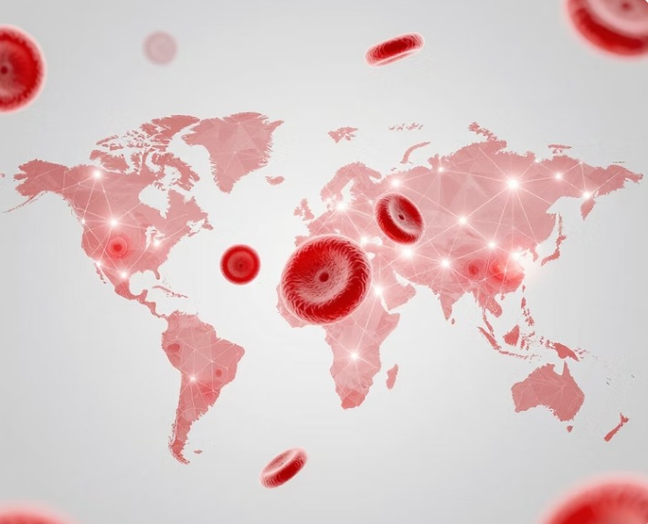

Bridging blood seekers and nearby donors instantly through precision mapping and rapid notification networks.

Determine the specific blood type needed. Hemolink identifies suitable donors within a precise 1 km radius based on real-time location data.
Donors receive immediate alerts via SMS or email. The system allows them to instantly accept or decline the request based on their current availability.
Real-time donor feedback flows back to seekers, and the system tracks donation coordinates to streamline the life-saving process efficiently.

Donors receive immediate notifications via SMS or email when a seeker within range requires a matching blood type, ensuring rapid response in critical moments.
Our intelligent mapping system identifies suitable donors within a 1 km radius of the seeker, bridging the gap between need and help with geometric accuracy.
Every request and response is tracked sequentially, providing seekers with live updates and maintaining a streamlined donation process that saves lives through clarity.
Join Hemolink's rapid response network. Whether you are seeking a donor or ready to give, our precision mapping connects lives in real-time. Join thousands of heroes in your direct vicinity and make an impact today.